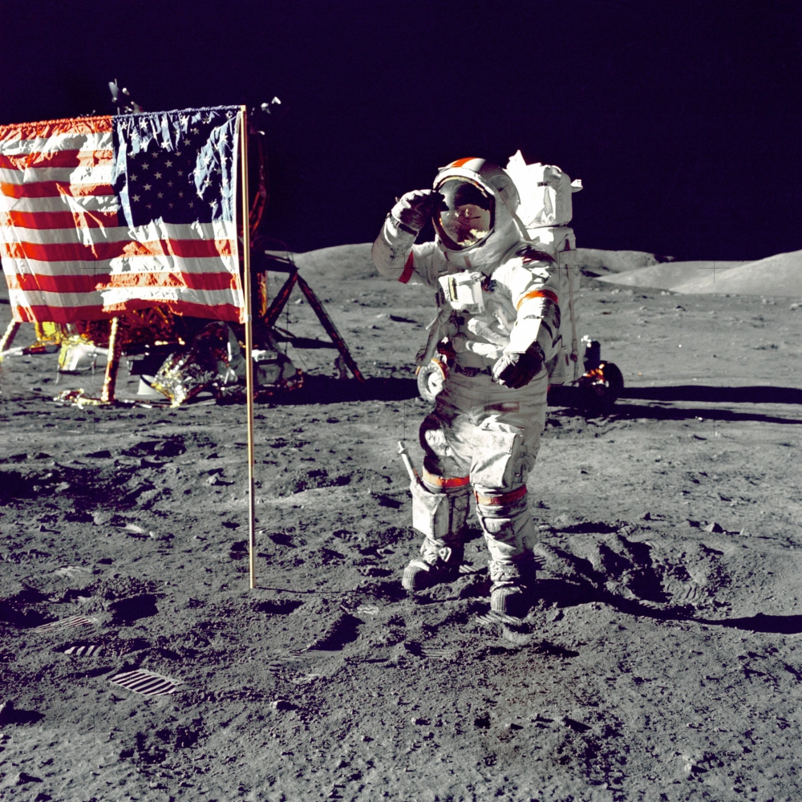
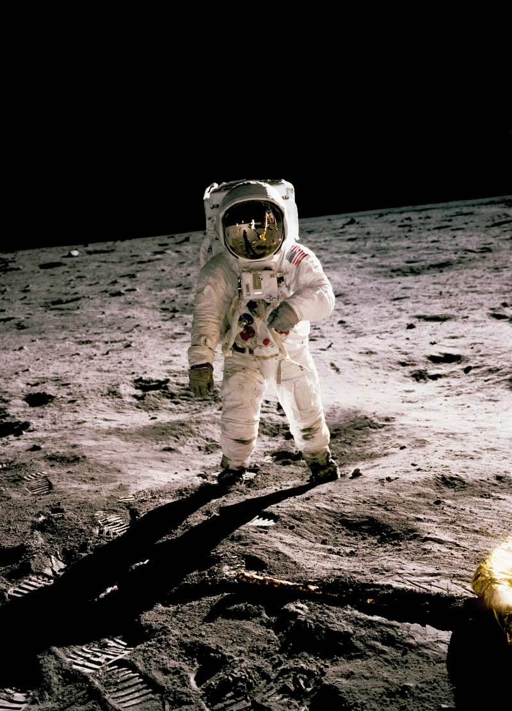
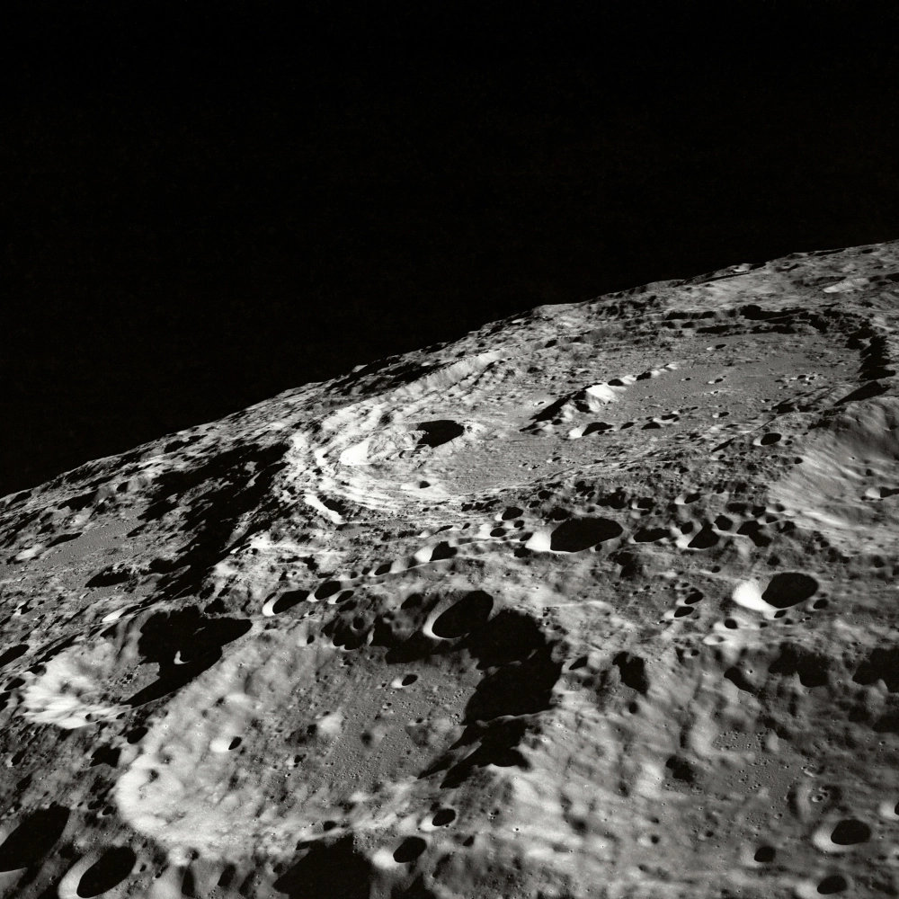
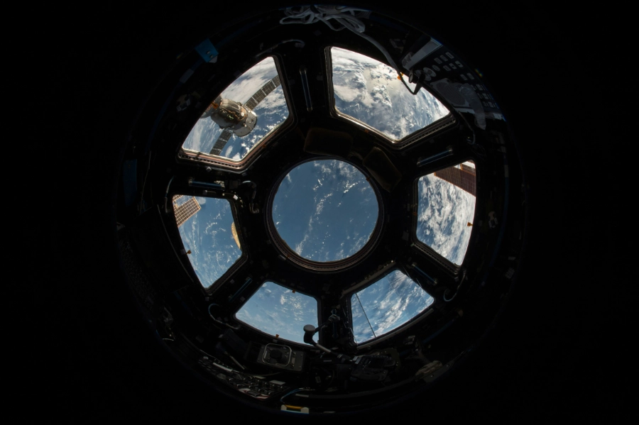
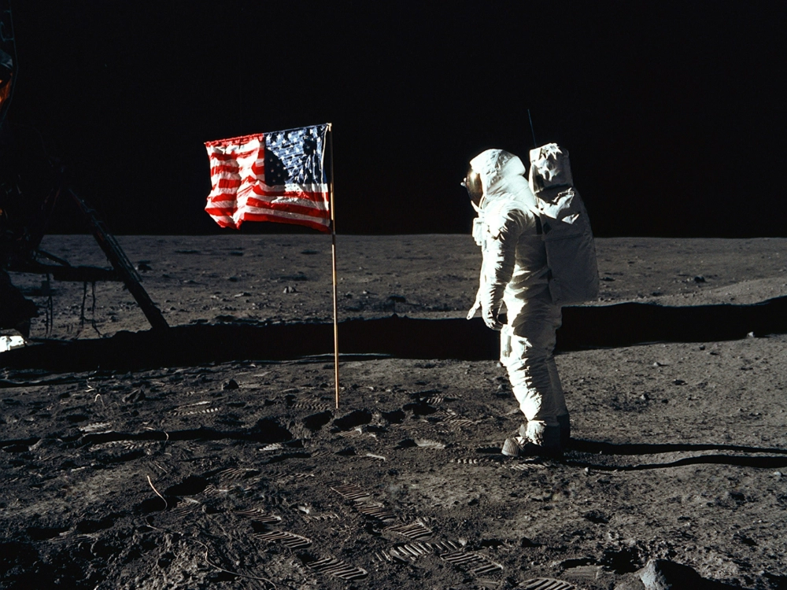
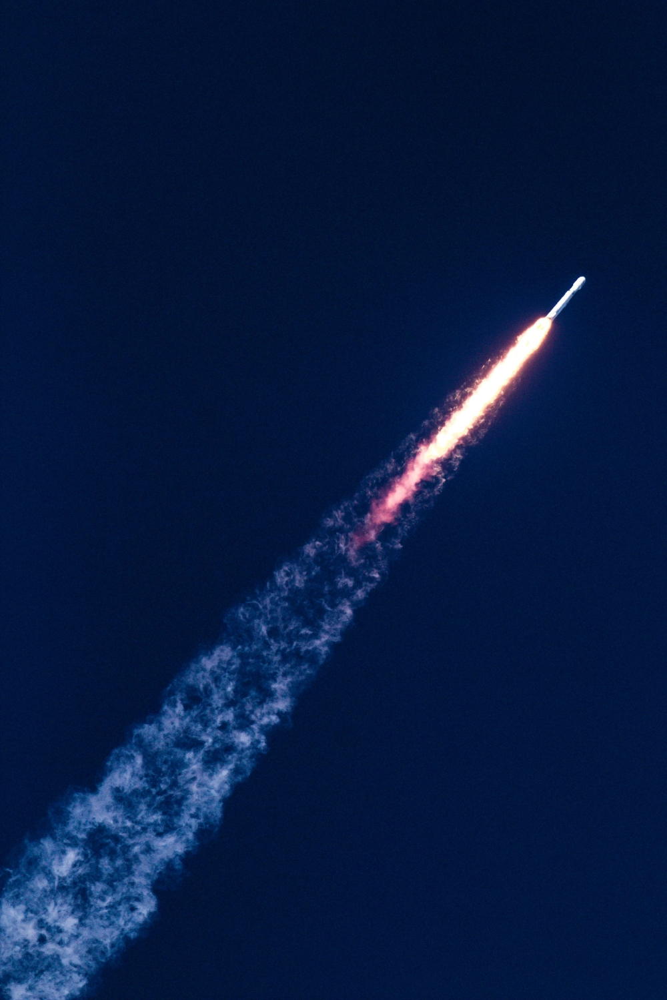
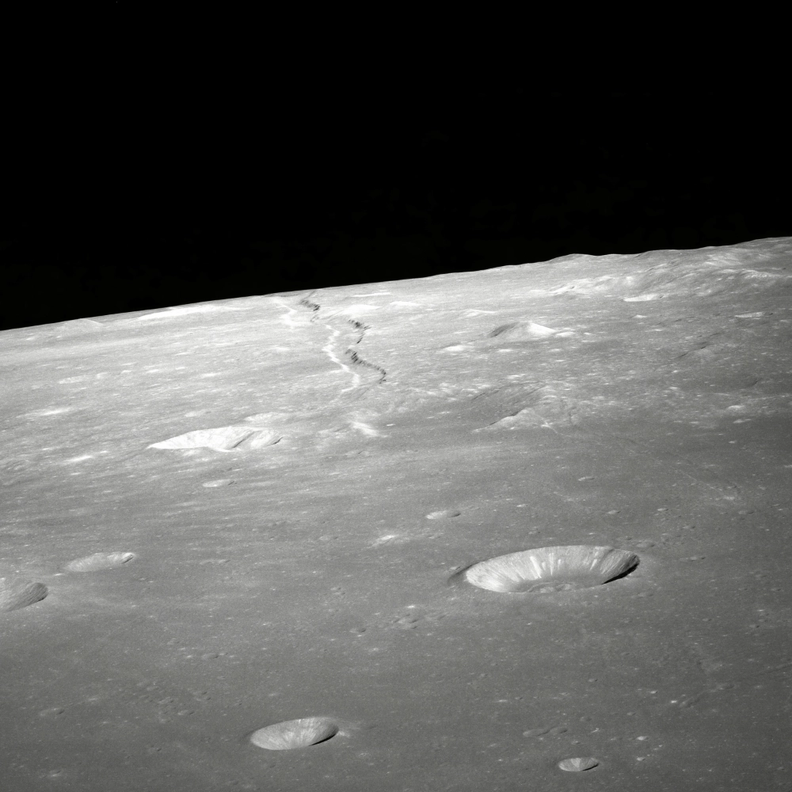
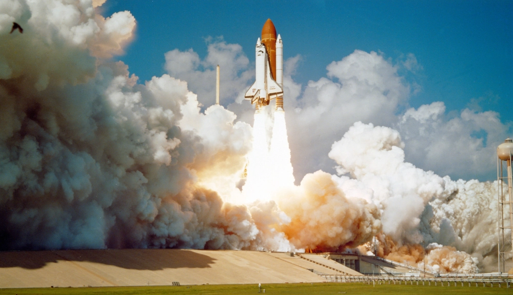
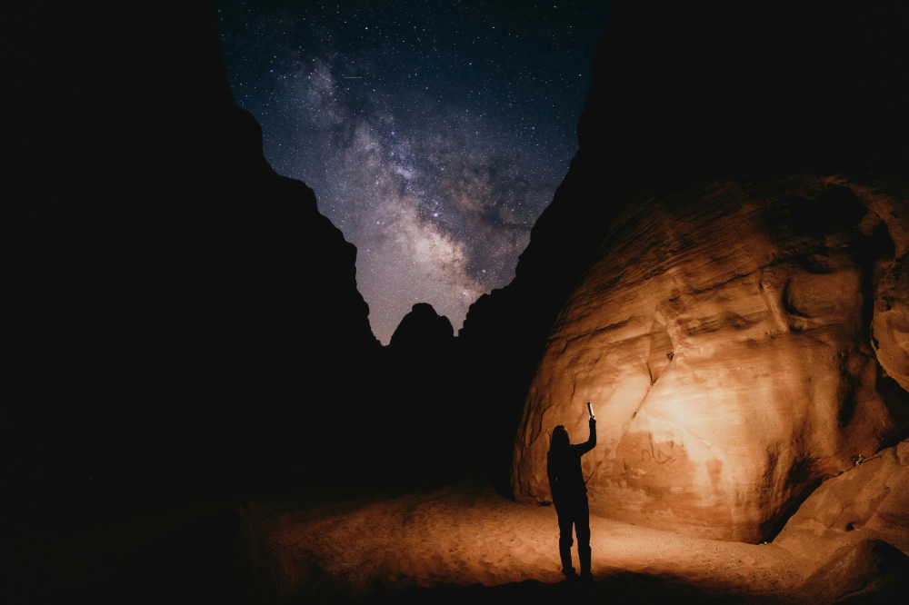
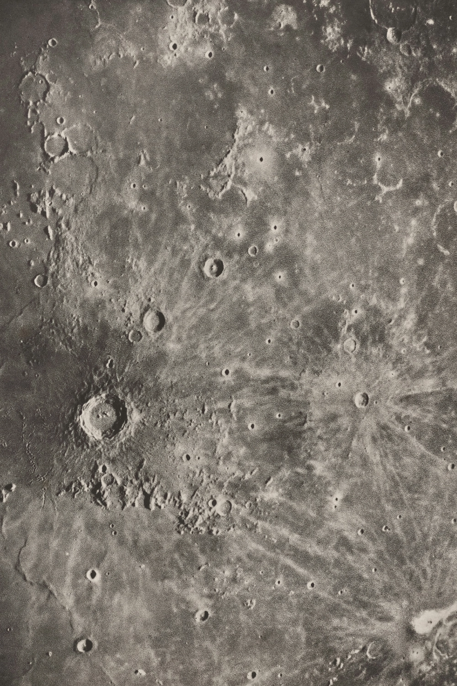

Explore the journey of Project Athena through our curated collection of images.
Athena Photo Gallery

Flight Commander Charlie Thomas on his first trip to the historical Moon
Landing
site. Footprints from the first expedition were still visible.

A crew member of AX-9 reflects on the lunar terrain during an unscheduled
EVA
outside Shackleton Research Station.

Reconnaissance imagery captured by the Athena-3 probe during site
selection
surveys for the proposed Artemis Forward Base.

Earth observed through the Athena Orbital Platform's observation dome
during a
routine systems diagnostic, 400km above the Pacific.

Mission Specialist Dr. Yuri Nakamura plants the Athena Aerospace flag at
the
Marius Hills outpost following the first crewed landing.

The Athena Titan IV lifts off from Launch Complex 39 carrying the first
crew
rotation to the Athena Orbital Platform.

Taken onboard AX-9 minutes before touching down in Athena's first lunar
landing.
Impact craters and ancient lava tunnels can be seen near the landing site.

Athena's first crewed flight test using the decomissioned NASA space
shuttle.

Through the domed Athena Biohab, long exposures can pick out never before
seen
details of the solar system.

Survey imagery during the initial pre launch planning stage, identifying
suitable landing sites for the Titan III.